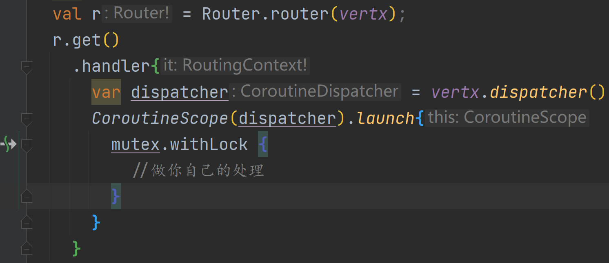
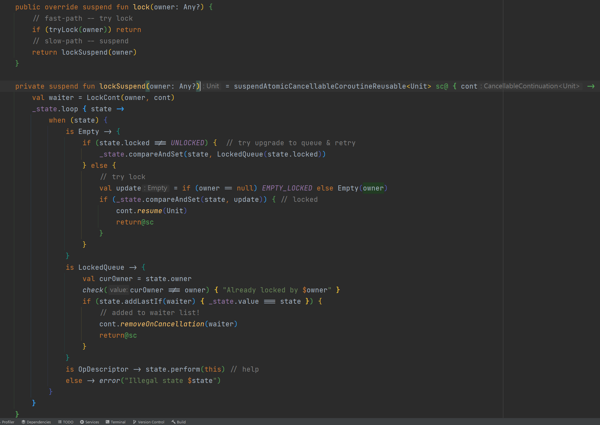
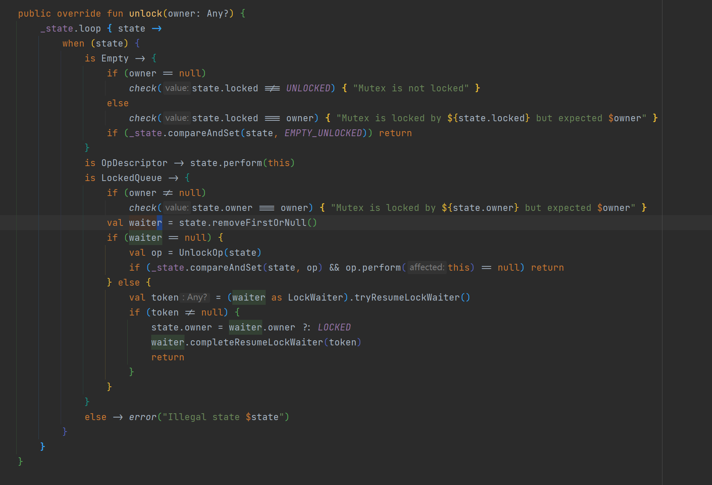
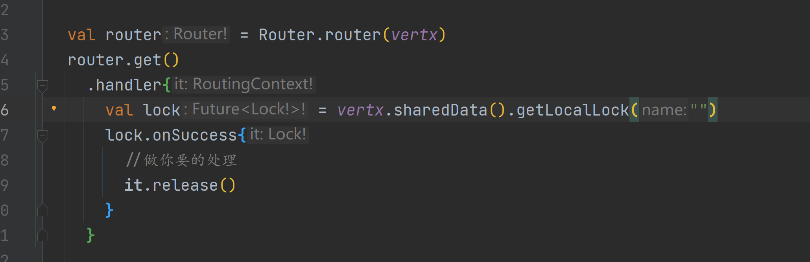
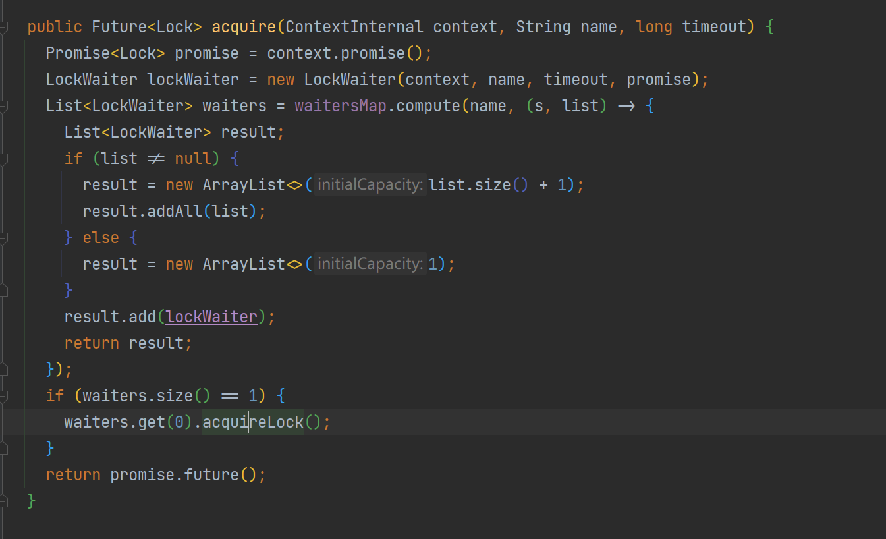
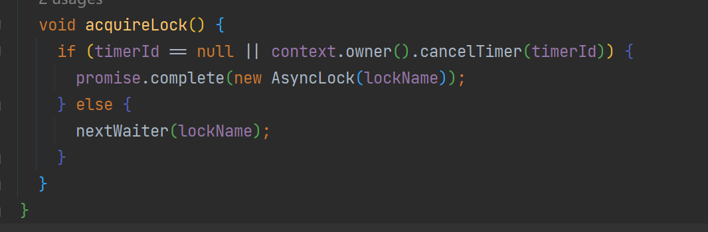

响应式的锁
由于响应式技术栈基本都是基于eventloop的，而对于当前（2022年5月18日）java的并发模型都是基于内核线程进行建模的，多个请求并发跑在同一个线程上导致了synchronized 和J.U.C包的锁不再适用
而并发中锁又是必须的，那么我们该怎么办？
kotlin 协程锁
以当前eventloop作为调度器驱动多个无栈协程，为每一个请求分配一个协程即可
本质上这种并不会阻塞住当前的内核线程，而是”阻塞“当前协程，实际上就是当前协程通过cas抢到锁之后来处理自己的业务，此时其他抢不到的阻塞等待调度，锁持有者协程放锁时恢复等待的协程执行

实际原理很简单：
cas看看能不能拿到 不能拿到把当前的continuation封装到waiter里面 等待resume

而unlock方法则是取出第一个等待的waiter节点，然后恢复其中的continuation执行就行了

vertx的异步锁

实际上就是通过 ConcurrentMap#compute的原子特性直接加入等待队列


若发现当前队列没有竞争者则直接获取到锁，触发future回调
而释放锁的release则是这样的
@Override
public void release() {
if (invoked.compareAndSet(false, true)) {
nextWaiter(lockName);
}
}
private void nextWaiter(String lockName) {
List<LockWaiter> waiters = waitersMap.compute(lockName, (s, list) -> {
return list == null || list.size() == 1 ? null : new ArrayList<>(list.subList(1, list.size()));
});
if (waiters != null) {
waiters.get(0).acquireLock();
}
}
直接让下一个等待者获取到锁即可
java的loom
如果我还是想用juc这种lock怎么办？
那么我们就可以使用project loom（jdk19将preview），将当前的eventloop或者其他的线程池作为有栈协程的调度器，由于loom带来的virtualthread（协程）是Thread的子类，且LockSupport类也对其有适配，阻塞虚拟线程而不是内核线程
val router = Router.router(vertx)
val lock = ReentrantLock()
router.get()
.handler{
Thread.startVirtualThread {
lock.lock()
try {
//做你要的处理
}finally {
lock.unlock()
}
}
}
然后我们来看看LockSupport#park方法 相当于从当前的内核线程上卸载这个协程 然后换一个协程来执行
public static void park(Object blocker) {
Thread t = Thread.currentThread();
setBlocker(t, blocker);
try {
if (t.isVirtual()) {
VirtualThreads.park();
} else {
U.park(false, 0L);
}
} finally {
setBlocker(t, null);
}
}
private void doPark() {
// complete immediately if parking permit available or interrupted
if (getAndSetParkPermit(false) || interrupted)
return;
// park the thread
setState(PARKING);
try {
if (!yieldContinuation()) {
// park on the carrier thread when pinned
parkOnCarrierThread(false, 0);
}
} finally {
assert (Thread.currentThread() == this) && (state() == RUNNING);
}
}
private boolean yieldContinuation() {
boolean notifyJvmti = notifyJvmtiEvents;
// unmount
if (notifyJvmti) notifyJvmtiUnmountBegin(false);
unmount();
try {
return Continuation.yield(VTHREAD_SCOPE);
} finally {
// re-mount
mount();
if (notifyJvmti) notifyJvmtiMountEnd(false);
}
}